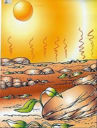
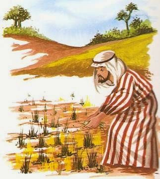

Cuando llego el dia de cosntatar cual habia tenido mayores cosechas el granjero se llevo una sorpresa al constatar que las pequeñas tierra del reino habian producido mucho mas que el, indignado acuso al rey de haber echo trampa y producir otras tierras que no estaban en el pacto, el rey calmado le explico al granjero que toda esa pequeñas tierras del reino eran de buena tierra y que por lo tanto sus sembrios dieron exelentes frutos, sin embargo que la mayor parte de sus tierras eran pedregales, asoladas y muy mal cuidadas por lo tanto solo una pequeña parte pudo producir frutos.
 